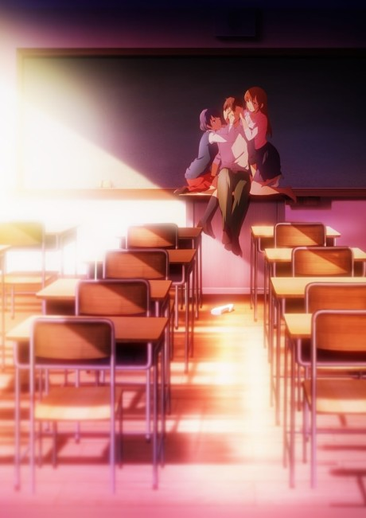

Domestic Girlfreind

The spice of life" -Gigguk
This show is definatly not for everyone. TBH I don't really know who it
is for but it is a messy romance anime
with some crazy concepts
and idea that is feels wrong to watch but is really fun and enjoyable.
10/10
Hina best girl